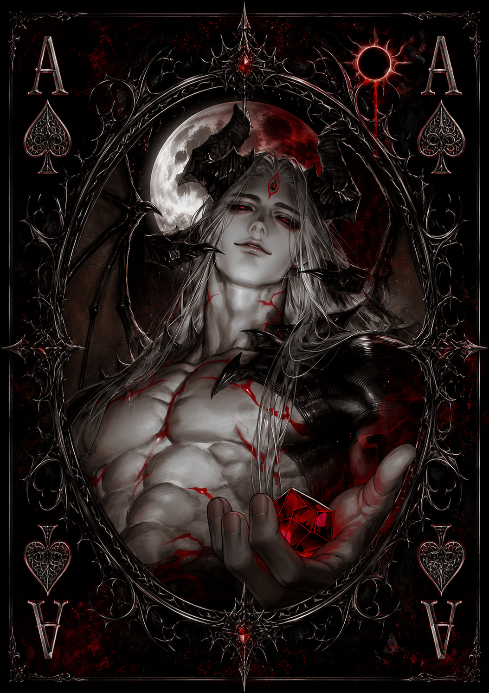

| Race | Ancient Demon |
| Gender | Male |
| Age | Over 4,000 Years |
| Nation | Gemora |
| Weapon | Crimson Sovereign Blade |
| Magic | Bloodfire Magic |
Morzeth is the ancient and absolute ruler of Gemora, having occupied its throne for thousands of years. Under his reign, the nation has developed one of the largest and most formidable armies among the eleven nations of Eryndor. His authority is unquestioned within his territory, and the mere appearance of Gemora's forces beyond its borders is often enough to signal an approaching conflict.
Sarcastic, impatient, and disturbingly composed, Morzeth rarely needs to raise his voice to intimidate those around him. His calm demeanor hides an intensely bloodthirsty nature, and violence is something he approaches with chilling ease. He possesses enormous confidence in his own superiority and has little tolerance for anyone who wastes his time or challenges his authority.
Both his danger and power are considered extreme. Morzeth possesses immense physical strength and devastating Bloodfire Magic, an ancient demonic art capable of combining infernal flames with blood-based sorcery. His Crimson Sovereign Blade further amplifies his destructive capabilities, making direct confrontation with him an encounter with an exceptionally low chance of survival.
Morzeth's ambitions extend far beyond Gemora. He repeatedly sends his forces against other nations, including his ongoing assaults against the Sanctuary of Leontrex, as part of a much greater objective: bringing all of Eryndor beneath his rule. For Morzeth, war is not merely conquest. It is the gradual construction of a world in which no throne remains beyond his authority.